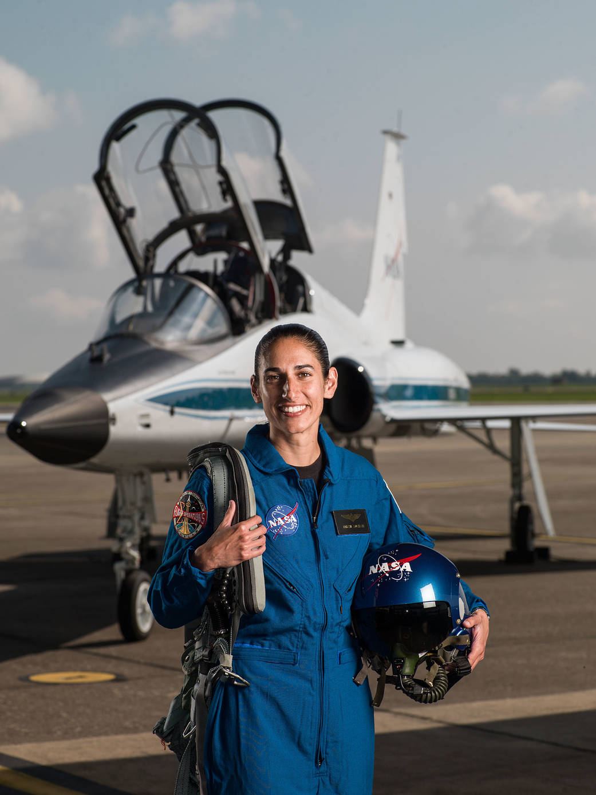

یاسمن مقبلی
.جاسمین مقبلی (متولد 24 ژوئن 1983) خلبان آزمایش تفنگداران دریایی آمریکایی ایرانی و فضانورد ناسا است. او فارغ التحصیل از موسسه فناوری ماساچوست، مدرسه عالی نیروی دریایی، نیروی دریایی و خلبان آزمایشی مدرسه است، و به عنوان 2019، بیش از 2000 ساعت از زمان پرواز در آن جمع شده و پرواز در 150 ماموریت های مبارزه با، از جمله پرواز در افغانستان است.
سنین جوانی و تحصیل
مقبلی در( 24 ژوئن 1983 ) در بادن نوهایم ، آلمان غربی ، از فرشته و کامی مقبلی متولد شد. والدین وی پس از انقلاب اسلامی 1979 از ایران فرار کردند و متعاقباً خانواده را به بالدوین ، نیویورک منتقل کردند. مقبلی در دبیرستان ارشد بالدوین در نیویورک تحصیل کرد و در دوران دانشجویی در آکادمی فضایی پیشرفته در اردوگاه فضایی آلاباما شرکت کرد. وی لیسانس مهندسی هوا فضا را با فناوری اطلاعات در انستیتوی فناوری ماساچوست (MIT) دریافت کرد و برای مهندسان MIT والیبال و بسکتبال بازی کرد.
دوره نظامی
مقبلی به عنوان افسر تفنگداران دریایی ایالات متحده و خلبان بالگرد سوپرکبرا آموزش دید و در این دوره ۱۵۰ مأموریت جنگی را به انجام رساند. او مدرک کارشناسی ارشد مهندسی هوافضا را از مدرسه تحصیلات تکمیلی نیروی دریایی دریافت کرد. او همچنین دورهٔ آموزشی خلبانی را در پایگاه نیروی هوایی-دریایی یوما گذراندهاست. مقبلی، از سال ۲۰۰۸ کار خلبانی هواپیماهای نظامی را شروع کرد. او بیش از دو هزار ساعت پرواز با ۲۵ نوع هواپیمای مختلف را در سابقهٔ خود دارد. مقبلی در دوران خدمت خود در ارتش آمریکا در سالهای ۲۰۰۹ تا ۲۰۱۰ در عملیات آمریکا در افغانستان شرکت داشتهاست.
فعالیت در ناسا
در ژوئن ۲۰۱۷، مقبلی یکی از دوازده نفری بود که به عنوان عضو گروه ۲۲ فضانوردان ناسا (ملقب به لاکپشتها) انتخاب شد و آموزش دو سالهٔ خود را آغاز کرد. مقبلی به همراه چهار زن و هفت مرد دیگر از میان ۱۸ هزار فرد داوطلب برای شرکت در این دوره، برگزیده شدهاست. در دسامبر ۲۰۲۰ اعلام شد مقبلی یکی از فضانوردانی خواهد بود که در برنامه فضایی آرتمیس ناسا به منظور فرستادن نخستین زن به روی ماه تربیت خواهد شد.
جوایز و افتخارات
مقبلی تاکنون چهار نشان هوایی، مدال ستایش، سه مدال موفقیت در نیروی دریایی و نشان ویلی مککول، در دورهٔ فعالیت خود به دست آوردهاست.
|  | |
| متولد | 24 ژوئن 1983 (37 ساله) باد نوهایم ، آلمان غربی |
|---|---|
| وضعیت | فعال |
| تابعیت | ایالات متحده |
| آلما ماتر | مؤسسه فناوری ماساچوست (لیسانس) مدرسه عالی نیروی دریایی (فوق لیسانس) |
| حرفه فضایی | فضانورد ناسا |
| شغل فعلی | خلبان ازمایشی |
| درجه | سرگرد، سپاه تفنگداران دریایی ایالات متحده آمریکا |
| گزینش | گروه ۲۲ فضانوردان ناسا |